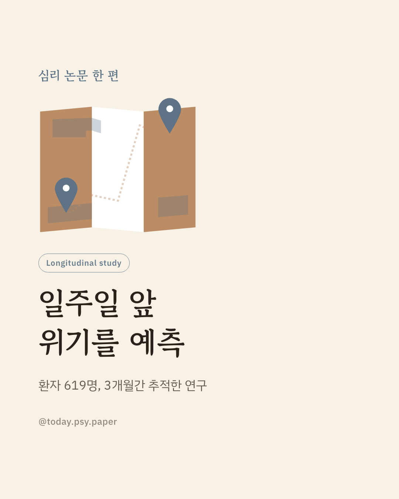
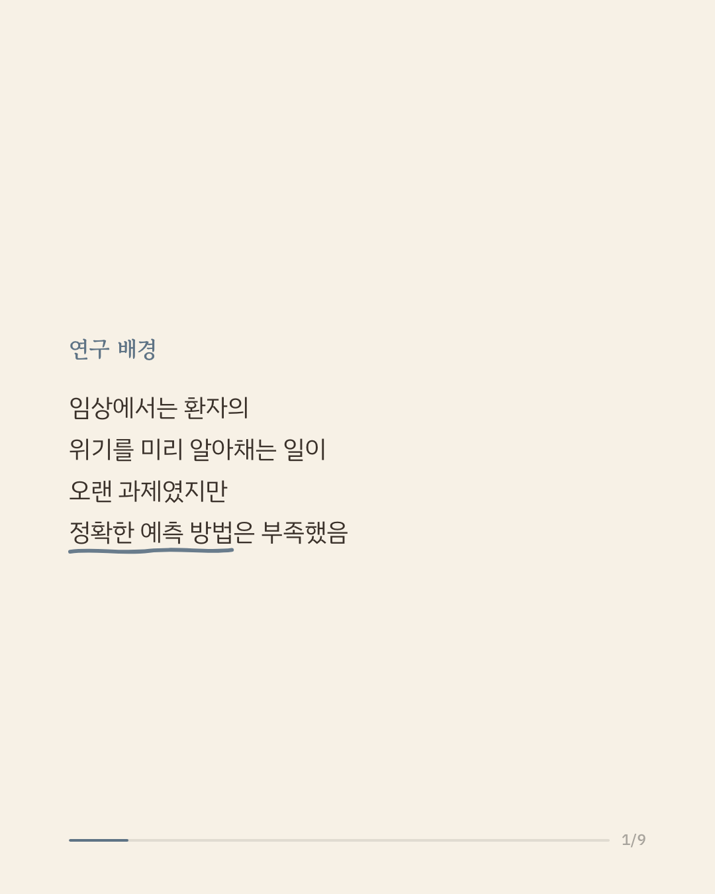
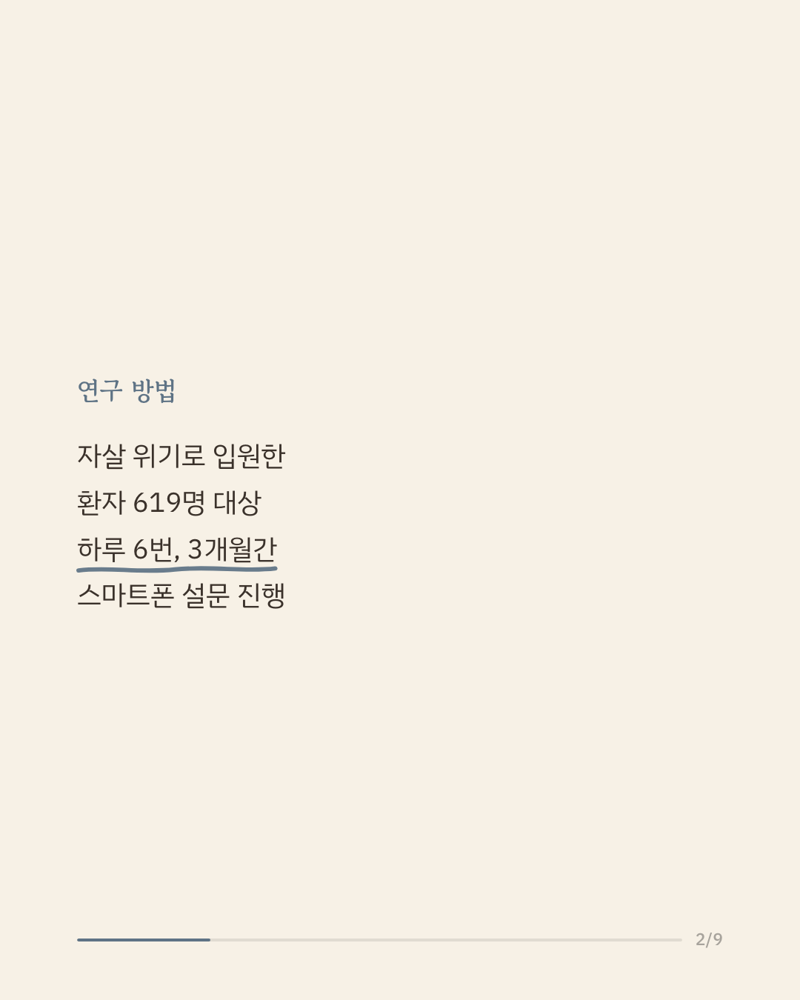
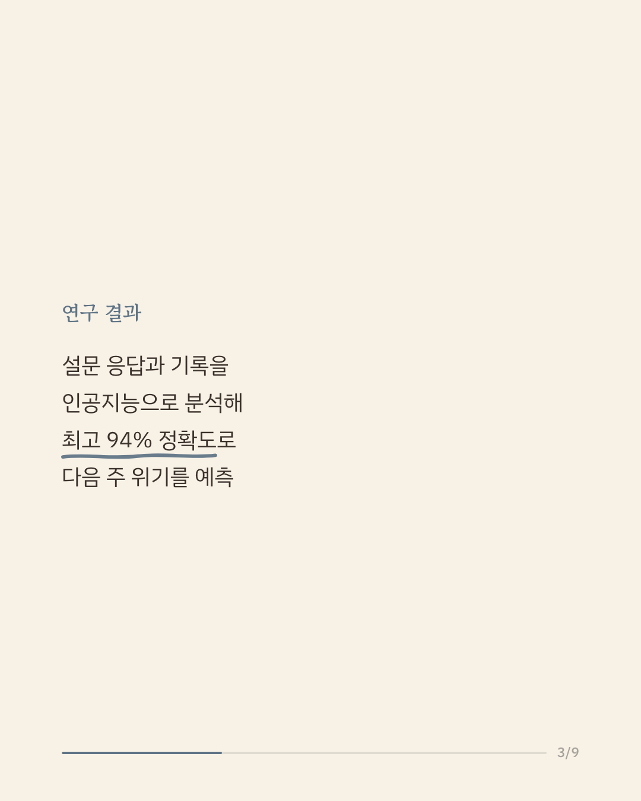
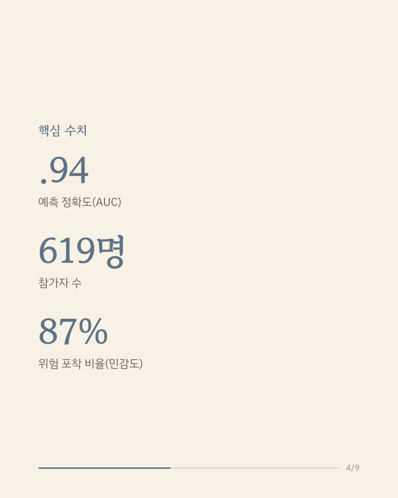
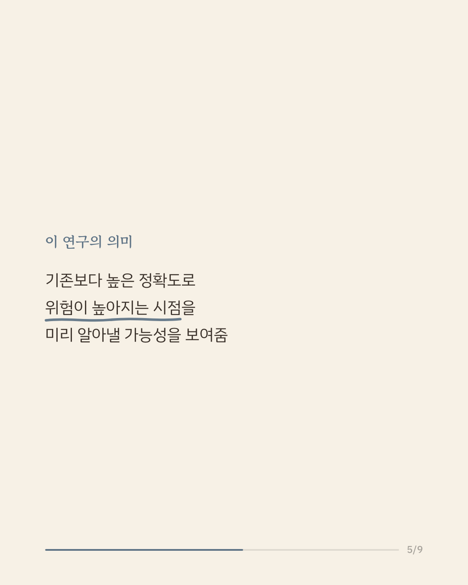
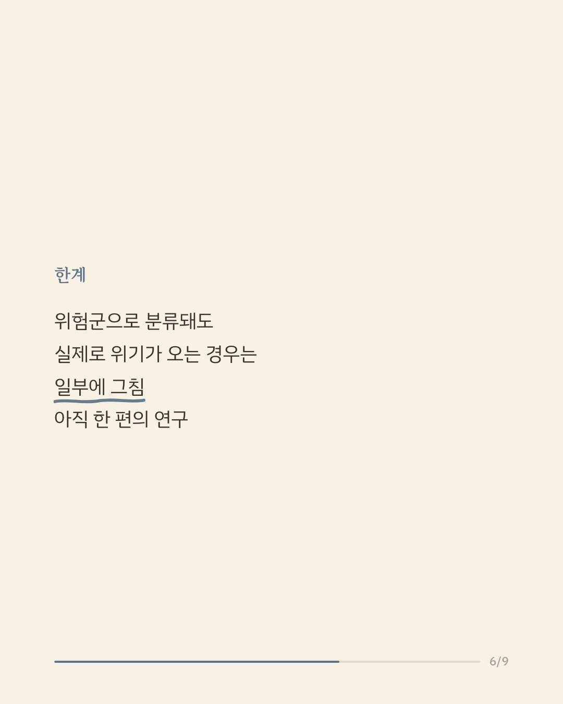
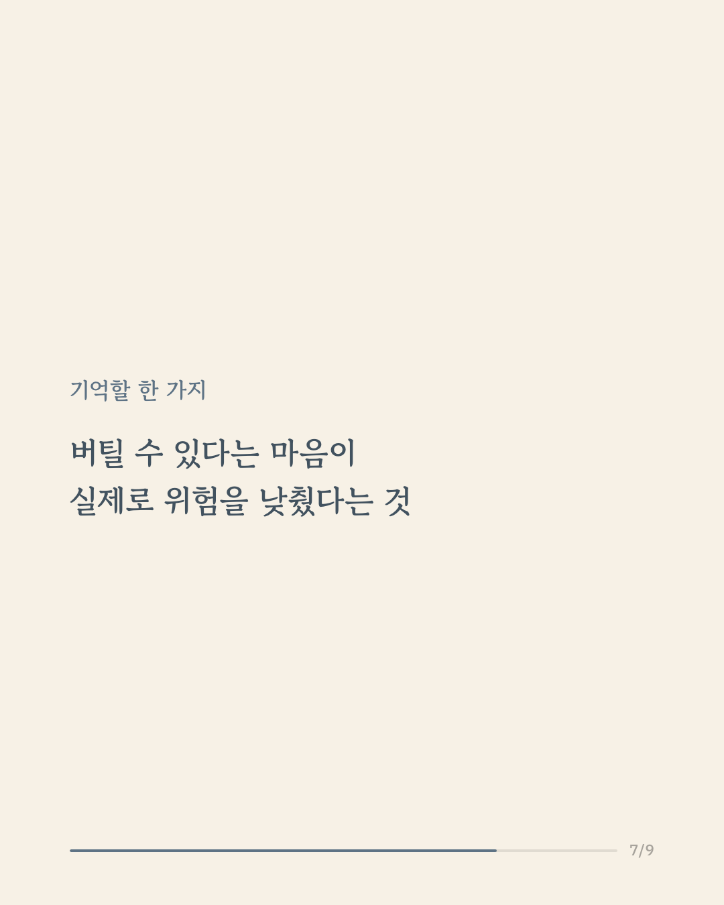
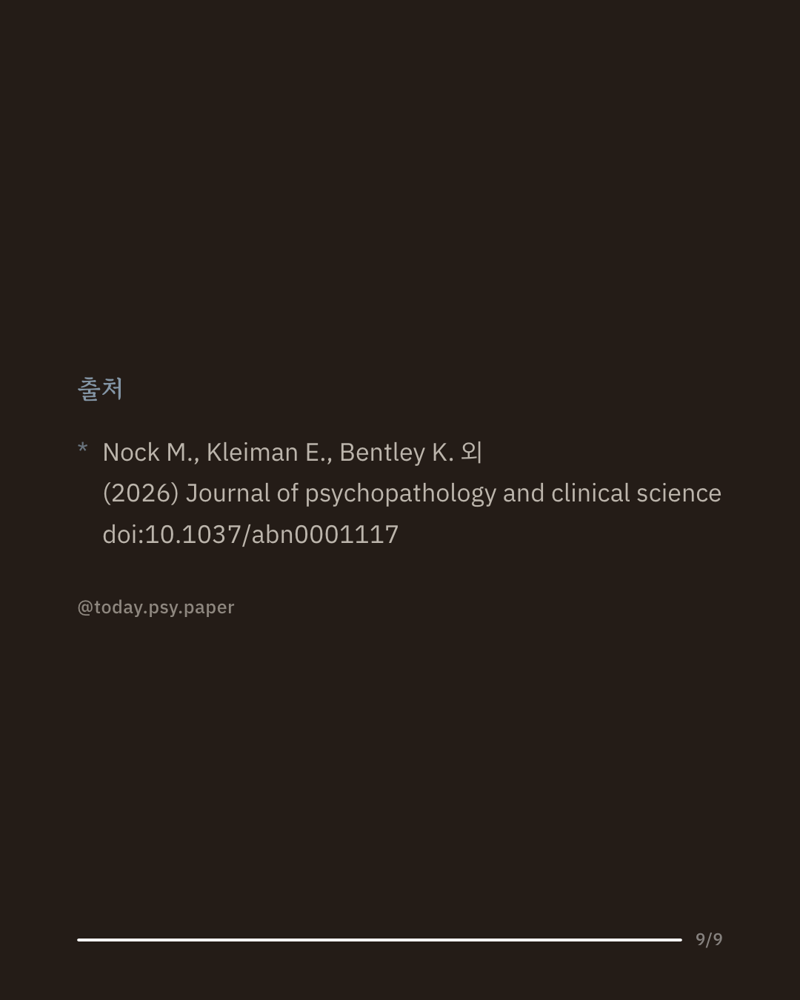

자살 위험이 높은 환자의 다음 주 위기를 예측하는 일은 임상 현장의 오랜 과제입니다. 그동안 이를 정확히 예측할 방법은 마땅치 않았습니다. 이 연구는 스마트폰 설문과 인공지능 모델을 결합해 일주일 앞의 위기를 예측할 수 있는지 확인했습니다. 자살 위기로 입원했던 환자 619명에게 3개월간 하루 6번 짧은 설문을 보내 응답 7만 9천여 건을 모았습니다. 가장 정확한 모델은 최대 94%의 정확도로 다음 주 위기를 예측했고, 과거 위기 이력과 초조감이 가장 강한 신호로 나타났습니다. 기존 방법보다 높은 정확도로 위험이 높아지는 시점을 미리 알아낼 가능성을 보여준 결과입니다. 다만 위험군으로 분류된 사람 중 실제로 위기를 겪는 경우는 일부에 그쳐, 아직 오탐을 줄이는 과제가 남아 있습니다. 단일 연구이므로 확대 해석은 조심해야 합니다. 출처: Journal of Psychopathology and Clinical Science (2026), 'Using smartphone surveys to predict next-week suicide attempts' 힘든 마음이 들 때는 자살예방상담전화 109, 정신건강상담전화 1577-0199에서 도움을 받을 수 있습니다. #임상심리 #정신건강정보 #자살예방 #심리학연구 #위기개입
python3 publish.py 42149475